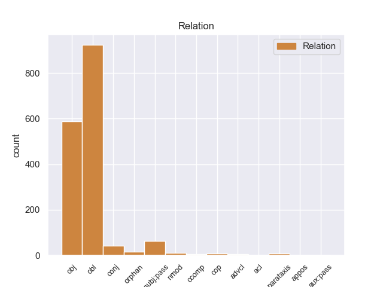
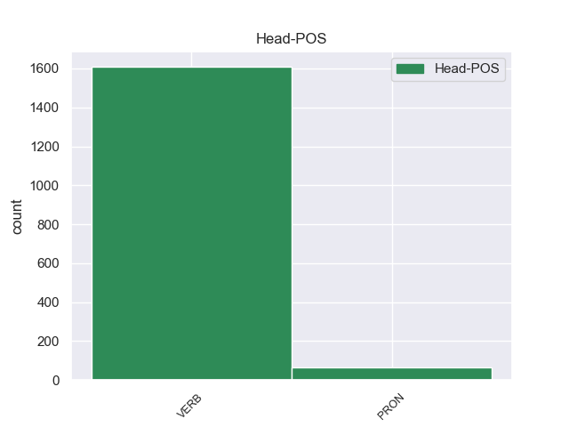
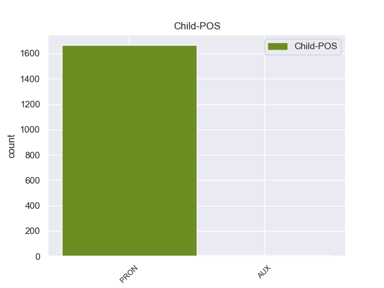

Distribution of features within this leaf



Agreement Rules sorted by frequency.
- When the dependent token is the oblique nominal(obl) of the head token, and the dependent token is PRON.
1 - _ _ _ _ 0 _ _ _
2 Нет нет VERB _ Aspect=Imp|Mood=Ind|Number=Sing|Person=3|Tense=Pres|VerbForm=Fin|Voice=Act 0 _ _ _
3 у _ _ _ _ 0 _ _ _
4 ней она PRON _ Case=Gen|Gender=Fem|Number=Sing|Person=3 2 obl 2:obl _
5 ни _ _ _ _ 0 _ _ _
6 пятнышка _ _ _ _ 0 _ _ _
7 синего _ _ _ _ 0 _ _ _
8 , _ _ _ _ 0 _ _ _
9 - _ _ _ _ 0 _ _ _
10 твердо _ _ _ _ 0 _ _ _
11 сказал _ _ _ _ 0 _ _ _
12 старший _ _ _ _ 0 _ _ _
13 . _ _ _ _ 0 _ _ _
1 Они _ _ _ _ 0 _ _ _
2 не _ _ _ _ 0 _ _ _
3 заботились _ _ _ _ 0 _ _ _
4 , _ _ _ _ 0 _ _ _
5 слушают слушать VERB _ Aspect=Imp|Mood=Ind|Number=Plur|Person=3|Tense=Pres|VerbForm=Fin|Voice=Act 0 _ _ _
6 их они PRON _ Case=Acc|Number=Plur|Person=3 5 obj 5:obj _
7 или _ _ _ _ 0 _ _ _
8 нет _ _ _ _ 0 _ _ _
8.1 _ _ _ _ _ 0 _ _ _
9 . _ _ _ _ 0 _ _ _
1 Они они PRON _ Case=Nom|Number=Plur|Person=3 2 nsubj:pass 2:nsubj:pass _
2 могут мочь VERB _ Aspect=Imp|Mood=Ind|Number=Plur|Person=3|Tense=Pres|VerbForm=Fin|Voice=Act 0 _ _ _
3 быть _ _ _ _ 0 _ _ _
4 блокированы _ _ _ _ 0 _ _ _
5 в _ _ _ _ 0 _ _ _
6 Верховном _ _ _ _ 0 _ _ _
7 Совете _ _ _ _ 0 _ _ _
8 СССР _ _ _ _ 0 _ _ _
9 в _ _ _ _ 0 _ _ _
10 ходе _ _ _ _ 0 _ _ _
11 дискуссий _ _ _ _ 0 _ _ _
12 , _ _ _ _ 0 _ _ _
13 ведущихся _ _ _ _ 0 _ _ _
14 на _ _ _ _ 0 _ _ _
15 уровне _ _ _ _ 0 _ _ _
16 здравого _ _ _ _ 0 _ _ _
17 смысла _ _ _ _ 0 _ _ _
18 . _ _ _ _ 0 _ _ _
1 Моды _ _ _ _ 0 _ _ _
2 не _ _ _ _ 0 _ _ _
3 признает признавать VERB _ Aspect=Imp|Mood=Ind|Number=Sing|Person=3|Tense=Pres|VerbForm=Fin|Voice=Act 0 _ _ _
4 , _ _ _ _ 0 _ _ _
5 всегда _ _ _ _ 0 _ _ _
6 на _ _ _ _ 0 _ _ _
7 ней она PRON _ Case=Loc|Gender=Fem|Number=Sing|Person=3 3 conj 3:conj _
8 несколько _ _ _ _ 0 _ _ _
9 юбок _ _ _ _ 0 _ _ _
10 почти _ _ _ _ 0 _ _ _
11 до _ _ _ _ 0 _ _ _
12 полу _ _ _ _ 0 _ _ _
13 - _ _ _ _ 0 _ _ _
14 может _ _ _ _ 0 _ _ _
15 быть _ _ _ _ 0 _ _ _
16 , _ _ _ _ 0 _ _ _
17 потому _ _ _ _ 0 _ _ _
18 что _ _ _ _ 0 _ _ _
19 ноги _ _ _ _ 0 _ _ _
20 кривы _ _ _ _ 0 _ _ _
21 . _ _ _ _ 0 _ _ _
1 Никому _ _ _ _ 0 _ _ _
2 он он PRON _ Case=Nom|Gender=Masc|Number=Sing|Person=3 0 _ _ _
3 не _ _ _ _ 0 _ _ _
4 был _ _ _ _ 0 _ _ _
5 особенно _ _ _ _ 0 _ _ _
6 нужен _ _ _ _ 0 _ _ _
7 - _ _ _ _ 0 _ _ _
8 он он PRON _ Case=Nom|Gender=Masc|Number=Sing|Person=3 2 parataxis 2:parataxis _
9 как _ _ _ _ 0 _ _ _
10 он _ _ _ _ 0 _ _ _
11 , _ _ _ _ 0 _ _ _
12 лично _ _ _ _ 0 _ _ _
13 как _ _ _ _ 0 _ _ _
14 Гарусов _ _ _ _ 0 _ _ _
15 . _ _ _ _ 0 _ _ _
1 Все _ _ _ _ 0 _ _ _
2 участники _ _ _ _ 0 _ _ _
3 этих _ _ _ _ 0 _ _ _
4 игр _ _ _ _ 0 _ _ _
5 с _ _ _ _ 0 _ _ _
6 судьбой _ _ _ _ 0 _ _ _
7 прекрасно _ _ _ _ 0 _ _ _
8 знали _ _ _ _ 0 _ _ _
9 , _ _ _ _ 0 _ _ _
10 что _ _ _ _ 0 _ _ _
11 в _ _ _ _ 0 _ _ _
12 случае _ _ _ _ 0 _ _ _
13 " _ _ _ _ 0 _ _ _
14 успеха _ _ _ _ 0 _ _ _
15 " _ _ _ _ 0 _ _ _
16 у _ _ _ _ 0 _ _ _
17 них они PRON _ Case=Gen|Number=Plur|Person=3 0 _ _ _
18 не _ _ _ _ 0 _ _ _
19 будет быть AUX _ Aspect=Imp|Mood=Ind|Number=Sing|Person=3|Tense=Pres|VerbForm=Fin|Voice=Act 17 cop 17:cop _
20 никаких _ _ _ _ 0 _ _ _
21 средств _ _ _ _ 0 _ _ _
22 излечиться _ _ _ _ 0 _ _ _
23 или _ _ _ _ 0 _ _ _
24 хотя _ _ _ _ 0 _ _ _
25 бы _ _ _ _ 0 _ _ _
26 как-то _ _ _ _ 0 _ _ _
27 облегчить _ _ _ _ 0 _ _ _
28 свои _ _ _ _ 0 _ _ _
29 страдания _ _ _ _ 0 _ _ _
30 . _ _ _ _ 0 _ _ _
1 Его _ _ _ _ 0 _ _ _
2 противник _ _ _ _ 0 _ _ _
3 объявляется объявлять VERB _ Aspect=Imp|Mood=Ind|Number=Sing|Person=3|Tense=Pres|VerbForm=Fin|Voice=Pass 0 _ _ _
4 победителем _ _ _ _ 0 _ _ _
5 , _ _ _ _ 0 _ _ _
6 если _ _ _ _ 0 _ _ _
7 при _ _ _ _ 0 _ _ _
8 этом _ _ _ _ 0 _ _ _
9 у _ _ _ _ 0 _ _ _
10 него он PRON _ Case=Gen|Gender=Masc|Number=Sing|Person=3 3 advcl 3:advcl _
11 формально _ _ _ _ 0 _ _ _
12 достаточно _ _ _ _ 0 _ _ _
13 материала _ _ _ _ 0 _ _ _
14 , _ _ _ _ 0 _ _ _
15 чтобы _ _ _ _ 0 _ _ _
16 поставить _ _ _ _ 0 _ _ _
17 мат _ _ _ _ 0 _ _ _
18 . _ _ _ _ 0 _ _ _
1 Никому _ _ _ _ 0 _ _ _
2 он _ _ _ _ 0 _ _ _
3 не _ _ _ _ 0 _ _ _
4 был _ _ _ _ 0 _ _ _
5 особенно _ _ _ _ 0 _ _ _
6 нужен _ _ _ _ 0 _ _ _
7 - _ _ _ _ 0 _ _ _
8 он он PRON _ Case=Nom|Gender=Masc|Number=Sing|Person=3 0 _ _ _
9 как _ _ _ _ 0 _ _ _
10 он он PRON _ Case=Nom|Gender=Masc|Number=Sing|Person=3 8 nmod 8:nmod SpaceAfter=No
11 , _ _ _ _ 0 _ _ _
12 лично _ _ _ _ 0 _ _ _
13 как _ _ _ _ 0 _ _ _
14 Гарусов _ _ _ _ 0 _ _ _
15 . _ _ _ _ 0 _ _ _
1 Нет _ _ _ _ 0 _ _ _
2 , _ _ _ _ 0 _ _ _
3 я я PRON _ Case=Nom|Number=Sing|Person=1 0 _ _ _
3.1 _ _ _ _ _ 0 _ _ _
4 о _ _ _ _ 0 _ _ _
When the dependent token is the passive auxiliary(aux:pass) of the head token, and the dependent token is AUX.
1 Забой _ _ _ _ 0 _ _ _
2 скота _ _ _ _ 0 _ _ _
3 с _ _ _ _ 0 _ _ _
4 соблюдением _ _ _ _ 0 _ _ _
5 религиозных _ _ _ _ 0 _ _ _
6 обычаев _ _ _ _ 0 _ _ _
7 будет быть AUX _ Aspect=Imp|Mood=Ind|Number=Sing|Person=3|Tense=Pres|VerbForm=Fin|Voice=Act 8 aux:pass 8:aux:pass _
8 производится производить VERB _ Aspect=Imp|Mood=Ind|Number=Sing|Person=3|Tense=Pres|VerbForm=Fin|Voice=Pass 0 _ _ _
9 на _ _ _ _ 0 _ _ _
10 самой _ _ _ _ 0 _ _ _
11 большой _ _ _ _ 0 _ _ _
12 в _ _ _ _ 0 _ _ _
13 мире _ _ _ _ 0 _ _ _
14 бойне _ _ _ _ 0 _ _ _
15 / _ _ _ _ 0 _ _ _
16 площадью _ _ _ _ 0 _ _ _
17 300 _ _ _ _ 0 _ _ _
18 тыс _ _ _ _ 0 _ _ _
19 кв _ _ _ _ 0 _ _ _
20 метров _ _ _ _ 0 _ _ _
21 / _ _ _ _ 0 _ _ _
22 вблизи _ _ _ _ 0 _ _ _
23 Мекки _ _ _ _ 0 _ _ _
24 , _ _ _ _ 0 _ _ _
25 на _ _ _ _ 0 _ _ _
26 которой _ _ _ _ 0 _ _ _
27 работают _ _ _ _ 0 _ _ _
28 20 _ _ _ _ 0 _ _ _
29 тыс _ _ _ _ 0 _ _ _
30 мясников _ _ _ _ 0 _ _ _
31 . _ _ _ _ 0 _ _ _
Disagree Examples:
1 - _ _ _ _ 0 _ _ _
2 Да _ _ _ _ 0 _ _ _
3 , _ _ _ _ 0 _ _ _
4 я _ _ _ _ 0 _ _ _
5 вас вы PRON _ Case=Acc|Number=Plur|Person=2 6 obj 6:obj _
6 слушаю слушать VERB _ Aspect=Imp|Mood=Ind|Number=Sing|Person=1|Tense=Pres|VerbForm=Fin|Voice=Act 0 _ _ _
7 , _ _ _ _ 0 _ _ _
8 - _ _ _ _ 0 _ _ _
9 сказал _ _ _ _ 0 _ _ _
10 он _ _ _ _ 0 _ _ _
11 , _ _ _ _ 0 _ _ _
12 продолжая _ _ _ _ 0 _ _ _
13 писать _ _ _ _ 0 _ _ _
14 . _ _ _ _ 0 _ _ _
1 Да _ _ _ _ 0 _ _ _
2 , _ _ _ _ 0 _ _ _
3 я _ _ _ _ 0 _ _ _
4 вас вы PRON _ Case=Acc|Number=Plur|Person=2 5 obj 5:obj _
5 слушаю слушать VERB _ Aspect=Imp|Mood=Ind|Number=Sing|Person=1|Tense=Pres|VerbForm=Fin|Voice=Act 0 _ _ _
6 , _ _ _ _ 0 _ _ _
7 - _ _ _ _ 0 _ _ _
8 повторил _ _ _ _ 0 _ _ _
9 Семен _ _ _ _ 0 _ _ _
10 Еремеевич _ _ _ _ 0 _ _ _
11 , _ _ _ _ 0 _ _ _
12 несколько _ _ _ _ 0 _ _ _
13 раздражаясь _ _ _ _ 0 _ _ _
14 от _ _ _ _ 0 _ _ _
15 того _ _ _ _ 0 _ _ _
16 , _ _ _ _ 0 _ _ _
17 что _ _ _ _ 0 _ _ _
18 третья _ _ _ _ 0 _ _ _
19 причина _ _ _ _ 0 _ _ _
20 улетучилась _ _ _ _ 0 _ _ _
21 из _ _ _ _ 0 _ _ _
22 памяти _ _ _ _ 0 _ _ _
23 . _ _ _ _ 0 _ _ _
1 - _ _ _ _ 0 _ _ _
2 Да _ _ _ _ 0 _ _ _
3 ты _ _ _ _ 0 _ _ _
4 бери брать VERB _ Aspect=Imp|Mood=Imp|Number=Sing|Person=2|VerbForm=Fin|Voice=Act 0 _ _ _
5 ее она PRON _ Case=Acc|Gender=Fem|Number=Sing|Person=3 4 obj 4:obj SpaceAfter=No
6 , _ _ _ _ 0 _ _ _
7 бери _ _ _ _ 0 _ _ _
8 ! _ _ _ _ 0 _ _ _
9 - _ _ _ _ 0 _ _ _
10 закричал _ _ _ _ 0 _ _ _
11 Савельев _ _ _ _ 0 _ _ _
12 . _ _ _ _ 0 _ _ _
1 Понятно _ _ _ _ 0 _ _ _
2 , _ _ _ _ 0 _ _ _
3 скажут _ _ _ _ 0 _ _ _
4 , _ _ _ _ 0 _ _ _
5 почему _ _ _ _ 0 _ _ _
6 тут _ _ _ _ 0 _ _ _
7 у _ _ _ _ 0 _ _ _
8 вас вы PRON _ Case=Gen|Number=Plur|Person=2 10 obl 10:obl _
9 трансформаторы _ _ _ _ 0 _ _ _
10 перегорают перегорать VERB _ Aspect=Imp|Mood=Ind|Number=Plur|Person=3|Tense=Pres|VerbForm=Fin|Voice=Act 0 _ _ _
11 . _ _ _ _ 0 _ _ _
1 - _ _ _ _ 0 _ _ _
2 Вас вы PRON _ Case=Acc|Number=Plur|Person=2 3 obj 3:obj _
3 пугает пугать VERB _ Aspect=Imp|Mood=Ind|Number=Sing|Person=3|Tense=Pres|VerbForm=Fin|Voice=Act 0 _ _ _
4 , _ _ _ _ 0 _ _ _
5 что _ _ _ _ 0 _ _ _
6 я _ _ _ _ 0 _ _ _
7 была _ _ _ _ 0 _ _ _
8 в _ _ _ _ 0 _ _ _
9 оккупации _ _ _ _ 0 _ _ _
10 . _ _ _ _ 0 _ _ _